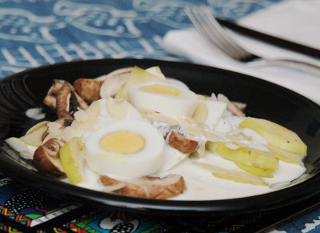

| Zutaten für 4 Personen: | |
| 500 g | Champignons |
| 1 | grosser, säuerlicher Apfel |
| 50 g | Mandelsplitter |
| 1 | Joghurt Nature |
| Zitronensaft | |
| 2 El | Mayonnaise |
| 2 | hartgekochte Eier |
| Salz | |
| Pfeffer | |
| Streuwürze | |
| Currypulver | |
| einige | Herzkirschen |
| Salatblätter | |
Champignons in nicht zu dünne Scheiben schneiden. In kochendem Salzwasser mit etwas Weisswein blanchieren. Abtropfen und abkühlen lassen.
Apfel in feine Scheiben schneiden.
Zutaten für die Salatsauce zusammen rühren. Mit einer Messerspitze Curry abschmecken.
Diese Sauce über die Champignons und Äpfel giessen und 5 Minuten ziehen lassen.
Mit Eischeiben und Herzkirschen garnieren. Auf Salatblätter anrichten.
Beilage zu Kuhn Champignons
Gelang am 30.12.2008 ganz ausgezeichnet. Ich habe die Herzkirschen und die Salatblätter weggelassen. Es schmeckte sehr fein. RE
@LINKBACK_TAG@ @WAKELOCK@